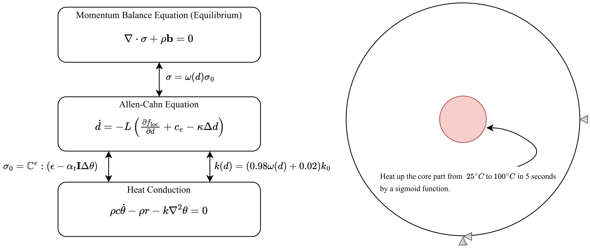

🔥 2D Thermal-Induced Fracture Simulation
🚀 Granite Disk Thermal-Induced Fracture
This benchmark explores a 2D plane strain granite disk subjected to thermal loading. The outer radius is \( R_{\text{out}} = 1 \,\text{m} \), and the inner heated core has a radius of \( R_{\text{in}} = 0.2 \,\text{m} \).
🔧 Basic Setup:
• The core region has a higher thermal expansion coefficient:
\( \alpha_{t,\text{core}} = 4.3 \times 10^{-5} \,\text{m/m-°C} \), compared to the outer region:
\( \alpha_{t,\text{outer}} = 3.5 \times 10^{-5} \,\text{m/m-°C} \).
• The temperature in the core is increased from 25 °C to 100 °C.
🔬 Four simulation cases:
1. Case 1: Crack propagation in the core is prevented by setting \( d = 0 \).
2. Case 2: Crack is allowed everywhere, but \( G_{c,\text{core}} = 3.0 \times 10^{-3} \,\text{MPa·m} \),
\( G_{c,\text{outer}} = 3.0 \times 10^{-5} \,\text{MPa·m} \).
3. Case 3: Crack is allowed everywhere, and fracture toughness is uniform:
\( G_{c,\text{core}} = G_{c,\text{outer}} = 3.0 \times 10^{-3} \,\text{MPa·m} \).
4. Case 4: Same as Case 2, but core temperature only rises from 25 °C to 50 °C.
The model solves three governing equations: phase field fracture (PF), mechanical equilibrium, and heat conduction equation. Their interactions are summarized as:
🔁 Equilibrium ↔ Heat Conduction Equation:
• \( \mathbf{u} \) contributes to total strain \( \epsilon = \nabla^{\text{sym}}\mathbf{u} \).
• Temperature \( \theta \) is used to compute the trial undamaged stress \( \sigma_0 \), which is passed into the phase-field model.
🔁 Heat Conduction Equation ↔ Phase Field:
• The damage variable \( d \) affects thermal conductivity \( k \), which is assumed to drop to 2% of the intact value when fully damaged.
• In some models, the energy release rate \( G_c \) depends on \( d \) or \( \theta \), but that’s typically for high-temperature scenarios — not considered here.
🔁 Equilibrium ↔ Phase Field:
• \( \mathbf{u} \) feeds into phase-field through the elastic energy \( \Psi_{\text{elastic}} \) and an additional driving force term \( c_e \).
• The damage field \( d \) then degrades \( \sigma_0 \) to compute the final stress \( \sigma \).
🚀 Multi-Physics System and Boundary Conditions

🔑 Key Highlights
✅ Implementation of coupling system by loosely coupled setting.
✅ Manually established interaction between thermal and phase field systems.
⚠️ Note 1: Any physical system is associated with a corresponding energy contribution, which can enter the phase-field fracture governing equation as part of the local driving force term. This is often written as: \[ \frac{\partial \Psi_{\text{loc}}}{\partial d} = \frac{\partial \Psi_{\text{elastic}}}{\partial d} + \frac{\partial \Psi_{\text{fracture}}}{\partial d} + \frac{\partial \Psi_{\text{other}}}{\partial d} \] where \(\Psi_{\text{other}}\) may represent additional physics such as thermal energy (\(\Psi_{\text{thermal}}\)) or fluid energy (\(\Psi_{\text{fluid}}\)) in porous flow systems. However, in a physical sense, thermally induced fracture arises primarily from the thermal stress, not from the temperature itself. As a result, it is common practice to exclude \(\Psi_{\text{thermal}}\) from the governing phase-field equation. Instead, temperature-dependent material parameters (e.g., conductivity in the present case) are coupled with the damage variable \(d\), capturing the thermal effects indirectly but effectively.
⚠️ Note 2: While using loosely coupled systems may compromise accuracy, extra care on convergence criteria is required. In this case, the nonlinear residual tolerance is set to \( 1 \times 10^{-7} \).
🚀 Primary Variables and Material Response

Case 1: Core Fixed

Case 2: Weak Outer Shell

Case 3: Uniform Toughness

Case 4: Lower Heating
✅ From Case 1 and Case 2, the fracture patterns differ due to whether damage in the core is allowed or not.
✅ In Case 3, since both core and outer shell share the same toughness, and the core is laterally confined, damage spreads more uniformly. This is likely influenced by the adopted phase-field formulation without elastic energy decomposition — hence compressive stress may also trigger damage. Here, tensile and compressive contributions are differentiated using the finite-epsilon model.
✅ In Case 4, the crack propagation is less aggressive than in Case 2, which aligns with expectations due to the lower temperature rise.